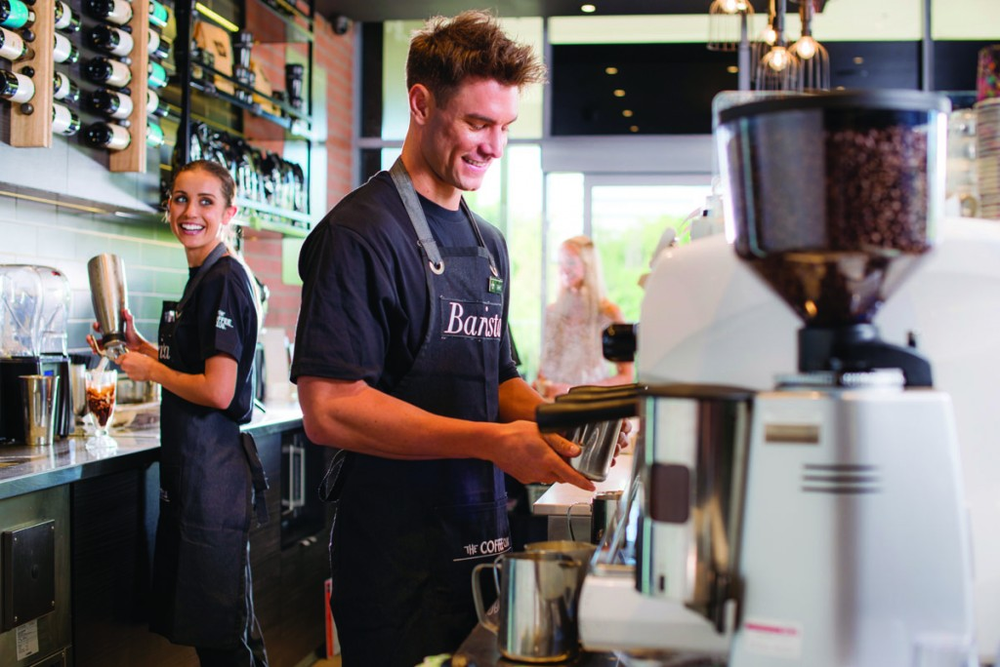

Our Humble Beginnings
The Coffee Club celebrates almost three decades of really good food, great service and excellent coffee. If it wasn’t for an appetite for coffee it may never have happened! In 1989, Brisbane City, founders Emmanuel Kokoris and Emmanuel Drivas cruised Brisbane late one night in search of a decent coffee, and came up empty handed. This disappointing experience inspired them to seize the opportunity, so they formulated a plan to take the world by storm – a coffee storm – now affectionately known as The Coffee Club. Their lightning bolt idea was to create more than just somewhere for people to meet for coffee; it would be more casual, comfortable yet sophisticated, stylish yet affordable. This untapped need in the Australian hospitality market was all about to change.Stepping onto the scene in 1990, flamboyant new director John Lazarou spearheaded a targeted marketing plan aimed at putting The Coffee Club front and centre for the world to see. The brand grew exponentially, focused on not only providing a great place to meet, but to be a brand that contributes to and involves the Australian community, year after year. Since opening its doors in Brisbane in 1989, The Coffee Club has become Australia’s largest home-grown café group with approximately 400 stores throughout 9 countries, with upwards of 40 million dedicated customers. Our mission and philosophy is simple, at The Coffee Club we want to provide: Good Food, Great Service and Excellent Coffee, in welcoming, relaxing surrounds, a place to enrich contemporary lifestyles, and most of all, to be the natural response to “Where will I meet you?”

Our Purpose
At The Coffee Club, we aim to make your experience a memorable one. Our energy and love for coffee is undeniable from the moment you take your first sip. Along with our excellent coffee, our simple thought-out menu comprises of family favourites which hero local produce. Our stores will provide you the perfect answer to “Where will I meet you?”
 |
 | |
|---|---|---|
| Customer Service | Teamwork | Accountability |
| Everyone who interacts with The Coffee Club is a customer, whether you’re a valued guest, one of our excellent kitchen or wait staff. We focus on everyone enjoying a positive and satisfying experience. | With so many different roles – from waiting, to working our kitchens, to being a brilliant barista – there’s nothing like that feeling when everyone’s pulling together and being part of The Coffee Club family | The Coffee Club is an exciting and satisfying place to work. Team members accept full accountability for their contribution, for the service they provide and the success of the business. |
| Positive Relationships | Continual Improvement |
|---|---|
| If our customers are to enjoy their experience, you need to get the good vibe going, which can only be the result of a harmonious workplace. Positivity is the play, every day in every way! | To continue to be successful means setting the pace. This philosophy was established on that first night in 1989 by our founders and we have continued to re-evaluate and re-invent. We always will. |